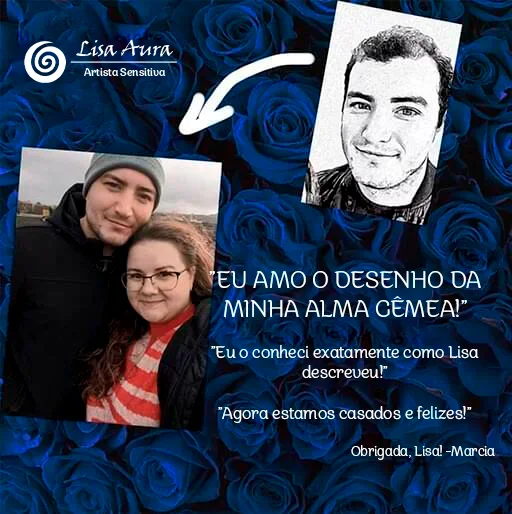

QUASE PRONTO!
AVISO: Você pode experimentar sentimentos intensos.
- Em 48 horas, você receberá um desenho digital de sua alma gêmea para baixar e imprimir. Mantenha-o por perto como um lembrete do seu futuro.
- BÔNUS GRÁTIS #1: Leitura do Anjo da Guarda – Descubra quem é seu Anjo da Guarda e o que ele pensa sobre você.
- BÔNUS GRÁTIS #2: Como Atrair Sua Alma Gêmea Mais Rápido – Um eBook com dicas práticas e espirituais para ajudá-lo a manifestar o amor.
- BÔNUS GRÁTIS #3: Limpeza de Aura - Sessão de Reiki – Limpe energias negativas e atraia vibrações positivas com esta sessão.
✨ Desenho Sensitivo da Alma Gêmea
Normalmente R$ 61,67
AGORA APENAS R$ 37, ECONOMIZE 40%
NÃO ACREDITE APENAS NA MINHA PALAVRA!
VEJA O QUE MEUS CLIENTES SATISFEITOS ESTÃO DIZENDO NOS TESTEMUNHOS ABAIXO!


Características do Serviço
DESCRIÇÃO DETALHADA [Adição Recomendada]
Fornecerei uma descrição detalhada de sua futura alma gêmea, incluindo traços de personalidade, comportamento, carreira potencial e iniciais do nome.
PREVISÃO
Se você optar pela adição de Descrição da Alma Gêmea, fornecerei insights sobre quando e onde você encontrará sua alma gêmea, juntamente com detalhes como signo do zodíaco, profissão e iniciais do nome.
DESENHO DA ALMA GÊMEA
Obtenha um desenho digital personalizado feito especificamente para você.
SATISFAÇÃO
Estou oferecendo 100% de satisfação nos meus desenhos de alma gêmea.
Perguntas Frequentes
Como funciona o Desenho e Leitura da Alma Gêmea?
Os esboços são baseados em leituras intuitivas de energia. Embora eu não o conheça pessoalmente, conecto-me com as energias e vibrações associadas a você no momento do pedido. Essas energias me guiam na visualização e desenho do que pode ser uma representação de sua potencial alma gêmea.
É uma combinação de intuição, percepção espiritual e expressão artística. Muitos acham esses esboços uma exploração divertida e intrigante de possibilidades, enquanto para outros, eles podem ressoar mais profundamente. De qualquer forma, é para ser uma experiência positiva e edificante para você.
Qual é o preço de um desenho?
Devido à qualidade do meu trabalho, normalmente cobro R$ 61,67, mas devido ao grande interesse em meus serviços, agora estou cobrando R$ 37.
Estou cético sobre isso, por que devo confiar em você?
Sou Lisa Aura, uma sensitiva com um dom único que aperfeiçoei desde a infância. Minhas habilidades foram cultivadas em uma família com profundas raízes em práticas espirituais e psíquicas, e passei anos aperfeiçoando meu ofício. Eu não apenas desenho; eu me conecto com energias e emoções em um nível que não é visível aos olhos.
Sou idoso(a), ainda pode haver alguém para mim?
Absolutamente, ainda pode haver alguém para você, independentemente da sua idade. O amor e a conexão não conhecem limites de tempo. A idade muitas vezes traz sabedoria, profundidade e um rico repertório de experiências, todas qualidades belas que podem atrair uma alma gêmea.
Em quanto tempo posso esperar receber meu desenho e leitura?
Seu desenho e leitura serão enviados a você por e-mail dentro de 24 horas. Em raras ocasiões, quando a demanda é alta, a entrega pode levar até 48 horas. No entanto, você tem a opção extra de entrega rápida em 6 horas.
O que meu desenho inclui?
Junto com o desenho de sua alma gêmea, incluí um arquivo sobre “como atrair sua alma gêmea mais rápido”. Ele contém insights espirituais e práticos valiosos.
Você também pode optar por receber uma descrição detalhada de suas características e qualidades para ajudá-lo(a) a reconhecê-lo(a) quando for a hora certa. Você pode marcar esta opção extra na página de checkout. Pagamento extra necessário.
Vou reconhecer minha alma gêmea a partir do desenho?
Muitas pessoas descobriram que seu desenho se parece com alguém que já conhecem, como um parceiro atual, alguém que admiram ou por quem têm sentimentos.
O que posso esperar do serviço?
Você pode esperar um trabalho de alta qualidade e um desenho real das visões recebidas durante uma conexão com a energia infinita do universo, com garantia de satisfação.
SIM! GARANTIR AGORA AO VIVO HOJE: Apenas 3 Vagas Disponíveis